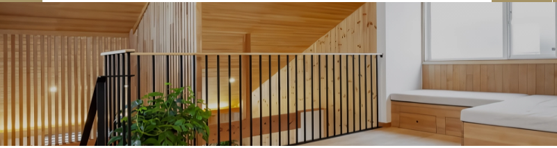
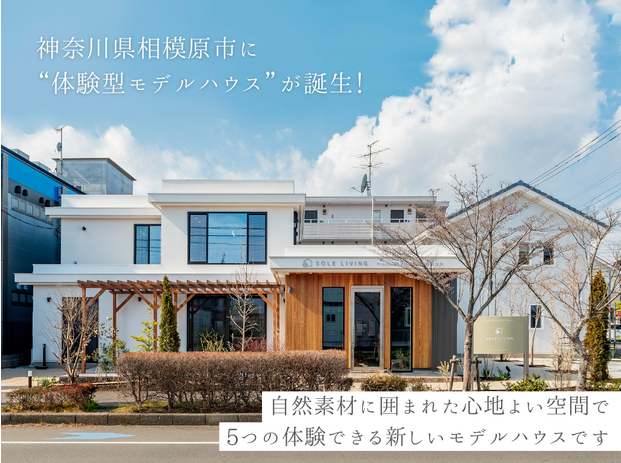

ご来場予約はこちら >>


ひとつひとつの暮らしを想う
1960年の創業以来、相模原の地に根ざし、
お客様の豊かな暮らしを実現するための
家づくりをお手伝いしてきました。
「SOLE=たったひとつの」
「LIVING=暮らし」
の名前には、
ひとつひとつのご家族の想いを大切にし、
建てたあとも末永く暮らしに寄り添える存在で
ありたい。
そんな願いが込められています。
1960年の創業以来、相模原の地に根ざし、
お客様の豊かな暮らしを実現するための
家づくりをお手伝いしてきました。
「SOLE=たったひとつの」
「LIVING=暮らし」
の名前には、
ひとつひとつのご家族の想いを大切にし、
建てたあとも末永く暮らしに寄り添える存在で
ありたい。
そんな願いが込められています。




ARCHITECT + ZERO
ARCHITECT + ZERO
が生み出す、新しい住まいのカタチ
ただの家ではない、暮らしを美しくするデザイン
「1ミリも嘘のない家づくり」
・建築家がデザインする、唯一無二の住まい・「0」宣言
（環境負荷ゼロ・エネルギーゼロ・無駄ゼロ）
の家づくり・デザイン × 機能の両立を実現
五感を満たす家
それが自由設計
SOLE LIVINGの
【0宣言の家】
（環境負荷ゼロ・エネルギーゼロ・無駄ゼロ）
の家づくり・デザイン × 機能の両立を実現
五感を満たす家
それが自由設計
SOLE LIVINGの
【0宣言の家】
〇こだわりの自由設計を体験した皆様の声
自然素材と高い気密・断熱性能で冬も快適。
前の家がとても寒かったので、“熱効率の良い家”に関する本を買って調べていたら、SOLE LIVINGさんの【0宣言の家】が載っていたんです。
家族がアレルギー体質なので、断熱材や接着剤にまで自然素材を使うことにも魅力を感じました。
プランでは、将来を考えて1階でご夫婦の暮らしが完結する間取りを希望。
書斎やバイク用ガレージ、夫人のスタディコーナーなど、それぞれにゆとりの時間を楽しむスペースも実現することができました。
無垢の床は本当に暖かいですね。床暖房はつけなくて正解でしたとほほ笑む。
生乾きの洗濯物が室内でカラリと乾く漆喰壁の調湿性や、外の車の音が気にならなくなった遮音性の高さにも満足という。
性能面以外も、「SOLE LIVINGは対話がスムーズで押しつけがなく、説明も丁寧で安心でした。関わる職人さんが、みなとても感じが良かったことも印象に残りましたね
家族がアレルギー体質なので、断熱材や接着剤にまで自然素材を使うことにも魅力を感じました。
プランでは、将来を考えて1階でご夫婦の暮らしが完結する間取りを希望。
書斎やバイク用ガレージ、夫人のスタディコーナーなど、それぞれにゆとりの時間を楽しむスペースも実現することができました。
無垢の床は本当に暖かいですね。床暖房はつけなくて正解でしたとほほ笑む。
生乾きの洗濯物が室内でカラリと乾く漆喰壁の調湿性や、外の車の音が気にならなくなった遮音性の高さにも満足という。
性能面以外も、「SOLE LIVINGは対話がスムーズで押しつけがなく、説明も丁寧で安心でした。関わる職人さんが、みなとても感じが良かったことも印象に残りましたね


自然素材に包まれた体に優しく心地のよい環境
SOLE LIVINGを選んだのは、耐震性能や気密・断熱性能など高い住宅性能に加え、
自然素材に包まれた心地よい暮らしができること。
そして何より「設計担当の松尾さんがつくってくれた暮らしやすそうな二世帯住宅のプランがよかった。
2階の子世帯の家づくりでは、広く開放感のあるリビングや多目的に使えるロフト、スタディコーナー、小上がりの畳コーナーなどを希望。
中でも夫人が特に要望したのが家事をラクにする洗濯動線。洗濯後、隣にあるサンルームに干すことができ、ウォークインクローゼットも近いのですぐにしまえるのが特徴だ。
とにかく暖かい家で、家の中で寒さを感じたことがないですね。
「SOLE LIVINGさんは皆さん親切で、気軽に相談できました。コスパにも満足です」
自然素材に包まれた心地よい暮らしができること。
そして何より「設計担当の松尾さんがつくってくれた暮らしやすそうな二世帯住宅のプランがよかった。
2階の子世帯の家づくりでは、広く開放感のあるリビングや多目的に使えるロフト、スタディコーナー、小上がりの畳コーナーなどを希望。
中でも夫人が特に要望したのが家事をラクにする洗濯動線。洗濯後、隣にあるサンルームに干すことができ、ウォークインクローゼットも近いのですぐにしまえるのが特徴だ。
とにかく暖かい家で、家の中で寒さを感じたことがないですね。
「SOLE LIVINGさんは皆さん親切で、気軽に相談できました。コスパにも満足です」


室内でも自然を感じ、光がたっぷり入る家
自然豊かな島に住んだご経験があり、「緑に囲まれて、自然を感じながら暮らしたい。
設計士の石原さんは、南面の庭に向かって大きな窓を配した眺望重視のプランを提案し、光がたっぷり入ること、無垢の木をふんだんに使うこと、収納が豊富なこと
行き止まりのない回遊動線の家であることなど、夫妻のこだわりにも丁寧に応えた。
1階はアイランドキッチンを中心に、また2階は吹き抜け周りをぐるぐると回れる動線が便利。
また収納では、それぞれの居室はもちろん、ファミリークローゼットやロフトなど大型収納を随所に配し、スッキリと暮らせる生活空間を実現した。
「断熱性が高い家なので、エアコンは各階に1台ずつしか設置しなかったのですが、これが大正解。夏は涼しく、冬も薪ストーブ1台でぽかぽかです」と、性能面でもご満足。
カーテンをつけていない窓々は、美しい緑景を切り取ったピクチャーウインドウのようで
理想の住まいで自然に癒される暮らしに満喫中。
設計士の石原さんは、南面の庭に向かって大きな窓を配した眺望重視のプランを提案し、光がたっぷり入ること、無垢の木をふんだんに使うこと、収納が豊富なこと
行き止まりのない回遊動線の家であることなど、夫妻のこだわりにも丁寧に応えた。
1階はアイランドキッチンを中心に、また2階は吹き抜け周りをぐるぐると回れる動線が便利。
また収納では、それぞれの居室はもちろん、ファミリークローゼットやロフトなど大型収納を随所に配し、スッキリと暮らせる生活空間を実現した。
「断熱性が高い家なので、エアコンは各階に1台ずつしか設置しなかったのですが、これが大正解。夏は涼しく、冬も薪ストーブ1台でぽかぽかです」と、性能面でもご満足。
カーテンをつけていない窓々は、美しい緑景を切り取ったピクチャーウインドウのようで
理想の住まいで自然に癒される暮らしに満喫中。


まずは実感してください
ご予約はこちらから＞
ご予約はこちらから＞

”体験型モデルハウス”

本当に良い家づくりを叶えるために知っておきたい
「5つの体験」ができる、
これまでに無かったモデルハウスです！
「5つの体験」ができる、
これまでに無かったモデルハウスです！
体験型モデルハウスとは？？

LINE登録
お問い合わせ
ご相談やお問い合わせはこちらからどうぞ。私たちの専門スタッフが丁寧に対応いたします。